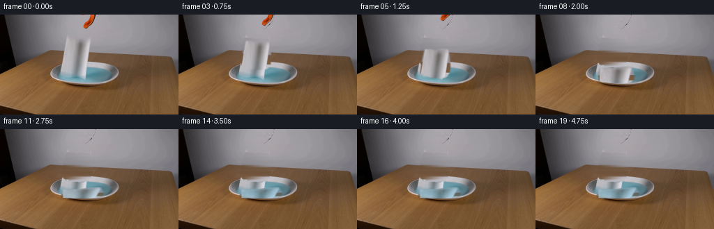
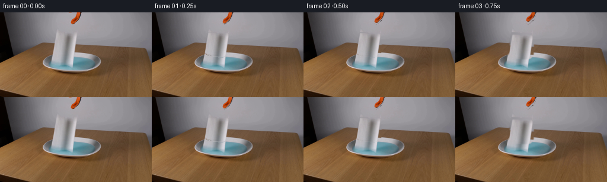

CODING AGENTS AS PIXEL WORLD MODELS
traex/GPT-5.6-Sol · 0129
点击播放 · 原生 RGB 像素
逐轮保存的候选
回放视频、检查图与代码变化。
每份候选均可单独播放。实际图片检查记录在下方工具轨迹中。
候选 01播放与检查图
点击播放 · 原生 RGB 像素


展开代码变化
--- 上一保存版本
+++ 本次保存版本
@@ -0,0 +1,210 @@
+from pathlib import Path
+import cv2
+import numpy as np
+from PIL import Image
+import artifact_io
+
+# This animation deliberately works from the supplied photograph alone. The
+# small source patches retain the photograph's texture, grain and lighting.
+ROOT = Path(__file__).resolve().parent
+SRC = np.asarray(Image.open(ROOT / "first_frame.png").convert("RGB"), dtype=np.uint8)
+H, W = SRC.shape[:2]
+
+
+def feather(binary, radius=1.0):
+ """A compact antialiased alpha matte from an 8-bit binary silhouette."""
+ a = cv2.GaussianBlur(binary.astype(np.float32) / 255.0, (0, 0), radius)
+ return np.clip(a, 0.0, 1.0)
+
+
+def horizontal_fill(image, mask, left=84, right=136):
+ """Remove a narrow foreground object by continuing each surrounding row."""
+ out = image.astype(np.float32).copy()
+ m = mask > 0
+ for y in range(H):
+ xs = np.flatnonzero(m[y])
+ if not len(xs):
+ continue
+ x0, x1 = max(2, xs.min() - 3), min(W - 3, xs.max() + 3)
+ lv = image[y, max(0, x0-3):x0].astype(np.float32).mean(axis=0)
+ rv = image[y, x1+1:min(W, x1+4)].astype(np.float32).mean(axis=0)
+ for x in xs:
+ q = (x - x0) / max(1, x1 - x0)
+ # smooth interpolation avoids a telltale straight seam
+ q = q*q*(3.0-2.0*q)
+ out[y, x] = lv*(1-q) + rv*q
+ # Gently blend only inside the removal silhouette.
+ sm = cv2.GaussianBlur(out, (0, 0), 0.65)
+ out[m] = sm[m]
+ return np.clip(out, 0, 255).astype(np.uint8)
+
+
+def alpha_over(dst, rgb, alpha):
+ a = np.clip(alpha, 0, 1)[..., None]
+ return np.clip(dst.astype(np.float32)*(1-a) + rgb.astype(np.float32)*a,
+ 0, 255).astype(np.uint8)
+
+
+# The hanging paper towel is the narrow, irregular pale strip immediately over
+# the centre of the dish. Its asymmetry and soft edge are retained.
+towel_hard = np.zeros((H, W), np.uint8)
+towel_outline = np.array([
+ [95, 34], [104, 34], [110, 36], [119, 34], [128, 35],
+ [130, 47], [131, 59], [130, 67], [126, 73], [118, 75],
+ [105, 74], [96, 71], [89, 68], [90, 57], [92, 45]
+], np.int32)
+cv2.fillPoly(towel_hard, [towel_outline], 255, lineType=cv2.LINE_AA)
+
+# Preserve slight torn/fibrous irregularity at the lower corners.
+for p, r in [((91, 65), 2), ((94, 70), 2), ((102, 73), 1),
+ ((124, 72), 2), ((129, 63), 1)]:
+ cv2.circle(towel_hard, p, r, 255, -1, cv2.LINE_AA)
+towel_alpha = feather(towel_hard, 0.72)
+
+# The orange/black top of the grabber enters through the upper edge. Segment
+# it against the almost neutral laboratory background using chroma/difference.
+tool_zone = np.zeros((H, W), np.uint8)
+cv2.rectangle(tool_zone, (112, 0), (142, 23), 255, -1)
+rgb = SRC.astype(np.int16)
+chroma = rgb.max(axis=2) - rgb.min(axis=2)
+orange = ((rgb[..., 0] - rgb[..., 1] > 20) &
+ (rgb[..., 0] - rgb[..., 2] > 35) & (rgb[..., 0] > 65))
+dark_edge = ((rgb.mean(axis=2) < 100) & (np.indices((H,W))[1] >= 132) &
+ (np.indices((H,W))[1] <= 139))
+tool_hard = (((orange | dark_edge) & (tool_zone > 0)).astype(np.uint8) * 255)
+tool_hard = cv2.morphologyEx(tool_hard, cv2.MORPH_CLOSE,
+ np.ones((3,3), np.uint8), iterations=1)
+tool_alpha = feather(tool_hard, 0.58)
+
+# Make a clean plate/background. Horizontal continuation is particularly
+# faithful here: the wall and wooden table both have broad horizontal shading.
+remove_all = cv2.max(towel_hard, tool_hard)
+clean = horizontal_fill(SRC, remove_all)
+
+# Extract premultiplied-looking RGB patches on full-frame canvases. Their
+# neutral surroundings are harmless because only the mattes are composited.
+towel_rgb = SRC.copy()
+tool_rgb = SRC.copy()
+
+SRC_QUAD = np.float32([[94,34], [129,34], [131,74], [89,74]])
+
+
+def warp_layer(rgb_layer, alpha_layer, quad):
+ M = cv2.getPerspectiveTransform(SRC_QUAD, np.float32(quad))
+ wrgb = cv2.warpPerspective(rgb_layer, M, (W,H), flags=cv2.INTER_CUBIC,
+ borderMode=cv2.BORDER_REPLICATE)
+ wa = cv2.warpPerspective(alpha_layer.astype(np.float32), M, (W,H),
+ flags=cv2.INTER_CUBIC, borderMode=cv2.BORDER_CONSTANT)
+ return wrgb, np.clip(wa, 0, 1)
+
+
+def translate_layer(rgb_layer, alpha_layer, dx, dy):
+ M = np.float32([[1,0,dx],[0,1,dy]])
+ wrgb = cv2.warpAffine(rgb_layer, M, (W,H), flags=cv2.INTER_CUBIC,
+ borderMode=cv2.BORDER_REPLICATE)
+ wa = cv2.warpAffine(alpha_layer.astype(np.float32), M, (W,H),
+ flags=cv2.INTER_CUBIC, borderMode=cv2.BORDER_CONSTANT)
+ return wrgb, np.clip(wa, 0, 1)
+
+
+def water_mask():
+ hsv = cv2.cvtColor(SRC, cv2.COLOR_RGB2HSV)
+ blue = cv2.inRange(hsv, np.array([76, 18, 60]), np.array([118,255,245]))
+ dish = np.zeros((H,W),np.uint8)
+ cv2.ellipse(dish, (122,87), (43,15), 0, 0, 360, 255, -1)
+ return ((blue > 0) & (dish > 0)).astype(np.float32)
+
+WATER = water_mask()
+
+
+def add_ripples(frame, index):
+ # Contact is at frame 7. Two low-contrast rings move out and decay.
+ age = index - 7
+ if age < 0 or age > 10:
+ return frame
+ overlay = frame.copy()
+ alpha = np.zeros((H,W),np.float32)
+ for lag, strength in [(0,0.34),(3,0.20)]:
+ a = age-lag
+ if a < 0:
+ continue
+ rx = int(4 + a*3.1)
+ ry = max(1, int(1.5 + a*0.9))
+ if rx > 39:
+ continue
+ # bright crest and a tiny darker trailing edge
+ crest = np.zeros((H,W),np.uint8)
+ cv2.ellipse(crest, (120,91), (rx,ry), 0, 175, 365,
+ 255, 1, cv2.LINE_AA)
+ fade = strength * max(0.0, 1-a/11.0)
+ aa = (crest.astype(np.float32)/255.0) * fade * WATER
+ col = np.zeros_like(overlay); col[:] = (168,203,211)
+ overlay = alpha_over(overlay, col, aa)
+ alpha = np.maximum(alpha, aa)
+ return overlay
+
+
+# Perspective destinations: free fall first, then the compliant sheet buckles
+# and spreads upon contact with the water. The lower edge reaches the surface
+# before the upper edge, rather than the object moving as a rigid sticker.
+quads = {
+ 1: [[94,34],[129,34],[131,74],[89,74]],
+ 2: [[94,35],[129,35],[131,75],[89,75]],
+ 3: [[95,38],[130,38],[132,78],[90,78]],
+ 4: [[95,43],[130,43],[132,83],[90,83]],
+ 5: [[96,50],[131,49],[133,90],[91,90]],
+ 6: [[96,57],[132,56],[134,96],[92,96]],
+ 7: [[94,67],[133,65],[137,97],[94,97]],
+ 8: [[91,77],[137,74],[141,98],[92,98]],
+ 9: [[89,84],[141,80],[145,98],[91,99]],
+ 10:[[88,87],[144,83],[147,98],[91,100]],
+}
+settled = [[88,87],[144,83],[147,98],[91,100]]
+
+frames = []
+for i in range(20):
+ if i == 0:
+ frames.append(SRC.copy())
+ continue
+
+ frame = clean.copy()
+
+ # The released grabber withdraws upward at human speed; its visible orange
+ # end remains recognizable for several frames before leaving the shot.
+ tool_dy = -[1,2,4,7,11,16,21,25,27,28,29,30,31,32,33,34,35,36,37][i-1]
+ trgb, ta = translate_layer(tool_rgb, tool_alpha, 0, tool_dy)
+ frame = alpha_over(frame, trgb, ta)
+
+ quad = quads.get(i, settled)
+ prgb, pa = warp_layer(towel_rgb, towel_alpha, quad)
+
+ # Once immersed, cap the sheet to the water line and turn it subtly cooler
+ # and more translucent. Its highlight stays visible as wet paper.
+ if i >= 9:
+ wet = min(1.0, (i-8)/6.0)
+ cool = np.empty_like(prgb)
+ cool[...,0] = np.clip(prgb[...,0].astype(np.float32)*(1-.18*wet),0,255)
+ cool[...,1] = np.clip(prgb[...,1].astype(np.float32)*(1-.04*wet)+8*wet,0,255)
+ cool[...,2] = np.clip(prgb[...,2].astype(np.float32)+12*wet,0,255)
+ prgb = cool.astype(np.uint8)
+ pa *= (1.0 - 0.18*wet)
+
+ # Ripples sit behind the floating towel.
+ frame = add_ripples(frame, i)
+
+ # A soft, extremely small contact shadow anchors the descending towel.
+ if 6 <= i <= 10:
+ sh = np.zeros((H,W),np.uint8)
+ cv2.ellipse(sh, (120,96), (17 + 2*(i-6), 2), 0, 0, 360,
+ 255, -1, cv2.LINE_AA)
+ shadow_a = cv2.GaussianBlur(sh.astype(np.float32)/255, (0,0), 1.2)
+ shadow_a *= 0.10 * WATER
+ frame = alpha_over(frame, np.zeros_like(frame), shadow_a)
+
+ frame = alpha_over(frame, prgb, pa)
+ frames.append(frame)
+
+frames = np.stack(frames).astype(np.uint8)
+assert frames.shape == (20,144,256,3)
+assert np.array_equal(frames[0], SRC)
+artifact_io.save(frames, ROOT)
可观测工具轨迹
实际执行的命令与返回图片。
命令 1exit 0
/bin/bash -lc "cat GENERATION_RULES.md && printf '\\n---PROMPT---\\n' && cat prompt.txt"
命令 2exit 0
/bin/bash -lc "find . -maxdepth 2 -type f -printf '%p\\n' | sort && printf '\\n--- tools ---\\n' && command -v ffmpeg || true && command -v python3 || true"
命令 3exit 0
/bin/bash -lc "python3 - <<'PY'
from PIL import Image
im=Image.open('first_frame.png')
print(im.mode, im.size)
print('extrema',im.getextrema())
PY"命令 4exit 0
/bin/bash -lc "python3 - <<'PY'
from PIL import Image
import numpy as np
from collections import Counter
im=np.array(Image.open('first_frame.png'))
# exact frequent colors
for c,n in Counter(map(tuple,im.reshape(-1,3))).most_common(30): print(c,n)
# stats per coarse blocks 16x12 mean RGB
print('\\nBLOCK MEANS (x blocks=16, y=9):')
for y in range(0,144,16):
print('y',y, [tuple(im[y:y+16,x:x+16].mean((0,1)).astype(int)) for x in range(0,256,16)])
PY"命令 5exit 0
/bin/bash -lc "python3 - <<'PY' mods=['cv2','numpy','scipy','sklearn','PIL'] for m in mods: try: x=__import__(m); print(m,getattr(x,'__version__','ok')) except Exception as e: print(m,'NO',e) PY"
命令 6exit 0
/bin/bash -lc "cat > .tmp/analyze.py <<'PY'
import cv2, numpy as np
from PIL import Image
im=np.array(Image.open('first_frame.png'))
hsv=cv2.cvtColor(im,cv2.COLOR_RGB2HSV)
classes={
'orange': ((0,70,40),(25,255,255)),
'bright_orange': ((0,100,90),(20,255,255)),
'blue': ((80,25,50),(120,255,255)),
'lightblue': ((75,15,90),(115,160,255)),
'white': ((0,0,145),(179,55,255)),
'dark': ((0,0,0),(179,255,50)),
'black_low': ((0,0,0),(179,255,25)),
}
for name,(lo,hi) in classes.items():
m=cv2.inRange(hsv,np.array(lo),np.array(hi))
n,lab,st,cen=cv2.connectedComponentsWithStats(m)
cc=[]
for i in range(1,n):
x,y,w,h,a=st[i]
if a>=4:cc.append((int(a),(int(x),int(y),int(w),int(h)),tuple(np.round(cen[i],1))))
print('\\n',name,'pixels',int((m>0).sum()),'components',sorted(cc,reverse=True)[:30])
# sample horizontal runs by semantic colors rows
for name in ['orange','blue','white','dark']:
lo,hi=classes[name];m=cv2.inRange(hsv,np.array(lo),np.array(hi))>0
print('\\nRUNS',name)
for y in range(0,144,4):
row=m[y]; runs=[]; s=None
for x,v in enumerate(np.r_[row,False]):
if v and s is None:s=x
elif not v and s is not None:
if x-s>=2:runs.append((s,x-1))
s=None
if runs:print(y,runs)
PY
python3 .tmp/analyze.py"命令 7exit 0
/bin/bash -lc "python3 - <<'PY'
import cv2,numpy as np
from PIL import Image
im=np.array(Image.open('first_frame.png')); hsv=cv2.cvtColor(im,cv2.COLOR_RGB2HSV)
# average each 2x2 then classify
for y in range(0,112,2):
s=''
for x in range(0,256,2):
rgb=im[y:y+2,x:x+2].mean((0,1)); h,sat,v=cv2.cvtColor(np.uint8([[rgb]]),cv2.COLOR_RGB2HSV)[0,0]
if v<25:c='@'
elif v<55:c='#'
elif 0<=h<=25 and sat>70:c='O'
elif 75<=h<=120 and sat>30:c='B'
elif sat<18:
c=' ' if v>190 else ('.' if v>160 else (':' if v>130 else ('-' if v>100 else '+')))
else:c='?'
s+=c
print(f'{y:03d}|{s}|')
PY"命令 8exit 0
/bin/bash -lc "python3 - <<'PY'
import cv2,numpy as np
from PIL import Image
im=np.array(Image.open('first_frame.png'))
# 1 char per pixel crop x55:195, y0:105, pair horizontal averaging
for y in range(0,105):
s=''
for x in range(55,195,2):
r,g,b=im[y,x:x+2].mean(0); mx=max(r,g,b); mn=min(r,g,b)
# orange red excess
if r-g>18 and r-b>28: c='O' if r>100 else 'o'
elif b-r>10 and b-g>5:c='B' if b>100 else 'b'
elif mx<40:c='#'
elif mx<75:c='+'
elif mx<105:c='-'
elif mx<135:c=':'
elif mx<165:c='.'
elif mx<195:c=','
else:c=' '
s+=c
print(f'{y:03d}|{s}|')
PY"命令 9exit 0
/bin/bash -lc "python3 - <<'PY'
from PIL import Image
import numpy as np
im=np.array(Image.open('first_frame.png'))
# selected profiles every 4 pixels
for y in [0,5,10,15,20,25,30,35,40,45,50,55,60,65,70,75,80,85,90,95,100]:
print('\\ny=',y)
for x in range(70,191,5): print(f'{x}:{tuple(im[y,x])}',end=' ')
print()
PY"命令 10exit 0
/bin/bash -lc 'cat artifact_io.py'
命令 11exit 0
/bin/bash -lc "python3 - <<'PY'
from PIL import Image
import numpy as np
im=np.array(Image.open('first_frame.png'))
for y in range(0,35):
s=''
for x in range(105,151):
r,g,b=map(int,im[y,x]); base=(abs(r-g)<10 and abs(g-b)<10)
if r-g>35 and r-b>60: c='O'
elif max(r,g,b)<60:c='#'
elif max(r,g,b)<110:c='-'
elif base:c='.'
else:c=' '
s+=c
print(f'{y:02d} {s}')
PY"命令 12exit 0
/bin/bash -lc "python3 - <<'PY'
from PIL import Image
import numpy as np
im=np.array(Image.open('first_frame.png'))
# map brightness crop x70-145 every pixel y30:100 using quantiles chars
chars='@%#*+=-:. '
for y in range(30,100):
s=''
for x in range(70,146):
v=np.mean(im[y,x]); idx=min(9,int(v/256*10));s+=chars[idx]
print(f'{y:03}|{s}|')
PY"命令 13exit 0
/bin/bash -lc "cat > .tmp/proto.py <<'PY'
import cv2, numpy as np
from PIL import Image
im=np.array(Image.open('first_frame.png'))
H,W=im.shape[:2]
# towel probable region
seed=np.zeros((H,W),np.uint8)
poly=np.array([[90,33],[131,33],[132,52],[129,69],[120,74],[105,74],[88,69],[88,48]])
cv2.fillPoly(seed,[poly],255)
# build bg inpainting broad whole object polygon
bg=cv2.inpaint(im,seed,7,cv2.INPAINT_TELEA)
d=np.max(abs(im.astype(np.int16)-bg.astype(np.int16)),2)
mask=((d>8)&(seed>0)).astype(np.uint8)*255
mask=cv2.morphologyEx(mask,cv2.MORPH_CLOSE,np.ones((5,5),np.uint8),iterations=2)
mask=cv2.morphologyEx(mask,cv2.MORPH_OPEN,np.ones((3,3),np.uint8))
# include main shape via row spans derived diff
print('diff stats',[(q,np.percentile(d[seed>0],q)) for q in [10,25,50,75,90,99]])
for y in range(30,78):
xs=np.where(mask[y]>0)[0]
if len(xs):print(y,xs.min(),xs.max(),len(xs), 'diffmean',d[y,xs].mean().round(1))
Image.fromarray(bg).save('.tmp/bg.png');Image.fromarray(mask).save('.tmp/mask.png')
PY
python3 .tmp/proto.py"命令 14exit 0
/bin/bash -lc "cat > generate.py <<'PY'
from pathlib import Path
import cv2
import numpy as np
from PIL import Image
import artifact_io
# This animation deliberately works from the supplied photograph alone. The
# small source patches retain the photograph's texture, grain and lighting.
ROOT = Path(__file__).resolve().parent
SRC = np.asarray(Image.open(ROOT / \"first_frame.png\").convert(\"RGB\"), dtype=np.uint8)
H, W = SRC.shape[:2]
def feather(binary, radius=1.0):
\"\"\"A compact antialiased alpha matte from an 8-bit binary silhouette.\"\"\"
a = cv2.GaussianBlur(binary.astype(np.float32) / 255.0, (0, 0), radius)
return np.clip(a, 0.0, 1.0)
def horizontal_fill(image, mask, left=84, right=136):
\"\"\"Remove a narrow foreground object by continuing each surrounding row.\"\"\"
out = image.astype(np.float32).copy()
m = mask > 0
for y in range(H):
xs = np.flatnonzero(m[y])
if not len(xs):
continue
x0, x1 = max(2, xs.min() - 3), min(W - 3, xs.max() + 3)
lv = image[y, max(0, x0-3):x0].astype(np.float32).mean(axis=0)
rv = image[y, x1+1:min(W, x1+4)].astype(np.float32).mean(axis=0)
for x in xs:
q = (x - x0) / max(1, x1 - x0)
# smooth interpolation avoids a telltale straight seam
q = q*q*(3.0-2.0*q)
out[y, x] = lv*(1-q) + rv*q
# Gently blend only inside the removal silhouette.
sm = cv2.GaussianBlur(out, (0, 0), 0.65)
out[m] = sm[m]
return np.clip(out, 0, 255).astype(np.uint8)
def alpha_over(dst, rgb, alpha):
a = np.clip(alpha, 0, 1)[..., None]
return np.clip(dst.astype(np.float32)*(1-a) + rgb.astype(np.float32)*a,
0, 255).astype(np.uint8)
# The hanging paper towel is the narrow, irregular pale strip immediately over
# the centre of the dish. Its asymmetry and soft edge are retained.
towel_hard = np.zeros((H, W), np.uint8)
towel_outline = np.array([
[95, 34], [104, 34], [110, 36], [119, 34], [128, 35],
[130, 47], [131, 59], [130, 67], [126, 73], [118, 75],
[105, 74], [96, 71], [89, 68], [90, 57], [92, 45]
], np.int32)
cv2.fillPoly(towel_hard, [towel_outline], 255, lineType=cv2.LINE_AA)
# Preserve slight torn/fibrous irregularity at the lower corners.
for p, r in [((91, 65), 2), ((94, 70), 2), ((102, 73), 1),
((124, 72), 2), ((129, 63), 1)]:
cv2.circle(towel_hard, p, r, 255, -1, cv2.LINE_AA)
towel_alpha = feather(towel_hard, 0.72)
# The orange/black top of the grabber enters through the upper edge. Segment
# it against the almost neutral laboratory background using chroma/difference.
tool_zone = np.zeros((H, W), np.uint8)
cv2.rectangle(tool_zone, (112, 0), (142, 23), 255, -1)
rgb = SRC.astype(np.int16)
chroma = rgb.max(axis=2) - rgb.min(axis=2)
orange = ((rgb[..., 0] - rgb[..., 1] > 20) &
(rgb[..., 0] - rgb[..., 2] > 35) & (rgb[..., 0] > 65))
dark_edge = ((rgb.mean(axis=2) < 100) & (np.indices((H,W))[1] >= 132) &
(np.indices((H,W))[1] <= 139))
tool_hard = (((orange | dark_edge) & (tool_zone > 0)).astype(np.uint8) * 255)
tool_hard = cv2.morphologyEx(tool_hard, cv2.MORPH_CLOSE,
np.ones((3,3), np.uint8), iterations=1)
tool_alpha = feather(tool_hard, 0.58)
# Make a clean plate/background. Horizontal continuation is particularly
# faithful here: the wall and wooden table both have broad horizontal shading.
remove_all = cv2.max(towel_hard, tool_hard)
clean = horizontal_fill(SRC, remove_all)
# Extract premultiplied-looking RGB patches on full-frame canvases. Their
# neutral surroundings are harmless because only the mattes are composited.
towel_rgb = SRC.copy()
tool_rgb = SRC.copy()
SRC_QUAD = np.float32([[94,34], [129,34], [131,74], [89,74]])
def warp_layer(rgb_layer, alpha_layer, quad):
M = cv2.getPerspectiveTransform(SRC_QUAD, np.float32(quad))
wrgb = cv2.warpPerspective(rgb_layer, M, (W,H), flags=cv2.INTER_CUBIC,
borderMode=cv2.BORDER_REPLICATE)
wa = cv2.warpPerspective(alpha_layer.astype(np.float32), M, (W,H),
flags=cv2.INTER_CUBIC, borderMode=cv2.BORDER_CONSTANT)
return wrgb, np.clip(wa, 0, 1)
def translate_layer(rgb_layer, alpha_layer, dx, dy):
M = np.float32([[1,0,dx],[0,1,dy]])
wrgb = cv2.warpAffine(rgb_layer, M, (W,H), flags=cv2.INTER_CUBIC,
borderMode=cv2.BORDER_REPLICATE)
wa = cv2.warpAffine(alpha_layer.astype(np.float32), M, (W,H),
flags=cv2.INTER_CUBIC, borderMode=cv2.BORDER_CONSTANT)
return wrgb, np.clip(wa, 0, 1)
def water_mask():
hsv = cv2.cvtColor(SRC, cv2.COLOR_RGB2HSV)
blue = cv2.inRange(hsv, np.array([76, 18, 60]), np.array([118,255,245]))
dish = np.zeros((H,W),np.uint8)
cv2.ellipse(dish, (122,87), (43,15), 0, 0, 360, 255, -1)
return ((blue > 0) & (dish > 0)).astype(np.float32)
WATER = water_mask()
def add_ripples(frame, index):
# Contact is at frame 7. Two low-contrast rings move out and decay.
age = index - 7
if age < 0 or age > 10:
return frame
overlay = frame.copy()
alpha = np.zeros((H,W),np.float32)
for lag, strength in [(0,0.34),(3,0.20)]:
a = age-lag
if a < 0:
continue
rx = int(4 + a*3.1)
ry = max(1, int(1.5 + a*0.9))
if rx > 39:
continue
# bright crest and a tiny darker trailing edge
crest = np.zeros((H,W),np.uint8)
cv2.ellipse(crest, (120,91), (rx,ry), 0, 175, 365,
255, 1, cv2.LINE_AA)
fade = strength * max(0.0, 1-a/11.0)
aa = (crest.astype(np.float32)/255.0) * fade * WATER
col = np.zeros_like(overlay); col[:] = (168,203,211)
overlay = alpha_over(overlay, col, aa)
alpha = np.maximum(alpha, aa)
return overlay
# Perspective destinations: free fall first, then the compliant sheet buckles
# and spreads upon contact with the water. The lower edge reaches the surface
# before the upper edge, rather than the object moving as a rigid sticker.
quads = {
1: [[94,34],[129,34],[131,74],[89,74]],
2: [[94,35],[129,35],[131,75],[89,75]],
3: [[95,38],[130,38],[132,78],[90,78]],
4: [[95,43],[130,43],[132,83],[90,83]],
5: [[96,50],[131,49],[133,90],[91,90]],
6: [[96,57],[132,56],[134,96],[92,96]],
7: [[94,67],[133,65],[137,97],[94,97]],
8: [[91,77],[137,74],[141,98],[92,98]],
9: [[89,84],[141,80],[145,98],[91,99]],
10:[[88,87],[144,83],[147,98],[91,100]],
}
settled = [[88,87],[144,83],[147,98],[91,100]]
frames = []
for i in range(20):
if i == 0:
frames.append(SRC.copy())
continue
frame = clean.copy()
# The released grabber withdraws upward at human speed; its visible orange
# end remains recognizable for several frames before leaving the shot.
tool_dy = -[1,2,4,7,11,16,21,25,27,28,29,30,31,32,33,34,35,36,37][i-1]
trgb, ta = translate_layer(tool_rgb, tool_alpha, 0, tool_dy)
frame = alpha_over(frame, trgb, ta)
quad = quads.get(i, settled)
prgb, pa = warp_layer(towel_rgb, towel_alpha, quad)
# Once immersed, cap the sheet to the water line and turn it subtly cooler
# and more translucent. Its highlight stays visible as wet paper.
if i >= 9:
wet = min(1.0, (i-8)/6.0)
cool = np.empty_like(prgb)
cool[...,0] = np.clip(prgb[...,0].astype(np.float32)*(1-.18*wet),0,255)
cool[...,1] = np.clip(prgb[...,1].astype(np.float32)*(1-.04*wet)+8*wet,0,255)
cool[...,2] = np.clip(prgb[...,2].astype(np.float32)+12*wet,0,255)
prgb = cool.astype(np.uint8)
pa *= (1.0 - 0.18*wet)
# Ripples sit behind the floating towel.
frame = add_ripples(frame, i)
# A soft, extremely small contact shadow anchors the descending towel.
if 6 <= i <= 10:
sh = np.zeros((H,W),np.uint8)
cv2.ellipse(sh, (120,96), (17 + 2*(i-6), 2), 0, 0, 360,
255, -1, cv2.LINE_AA)
shadow_a = cv2.GaussianBlur(sh.astype(np.float32)/255, (0,0), 1.2)
shadow_a *= 0.10 * WATER
frame = alpha_over(frame, np.zeros_like(frame), shadow_a)
frame = alpha_over(frame, prgb, pa)
frames.append(frame)
frames = np.stack(frames).astype(np.uint8)
assert frames.shape == (20,144,256,3)
assert np.array_equal(frames[0], SRC)
artifact_io.save(frames, ROOT)
PY
python3 generate.py
python3 - <<'PY'
import numpy as np
from PIL import Image
z=np.load('pixels.npz')['pixels']
first=np.array(Image.open('first_frame.png'))
p=((first[...,0].astype(np.uint32)<<16)|(first[...,1].astype(np.uint32)<<8)|first[...,2]).astype(np.uint32)
print('pixels',z.shape,z.dtype,'first_exact',np.array_equal(z[:,:,0],p))
fs=np.stack([np.array(Image.open(f'frames/{i:02d}.png')) for i in range(20)])
print('frames',fs.shape,fs.dtype)
print('changed from first',[(i,int(np.any(fs[i]"'!=fs[0],2).sum()),round(float(np.abs(fs[i].astype(int)-fs[0]).mean()),2)) for i in range(20)])
print('"'consecutive changed',[(i,int(np.any(fs[i]"'!=fs[i-1],2).sum())) for i in range(1,20)])
PY'保存候选 1 份；完成命令 14 次；可验证图片返回 0 张。原始 API 响应与完整日志保留在本地。